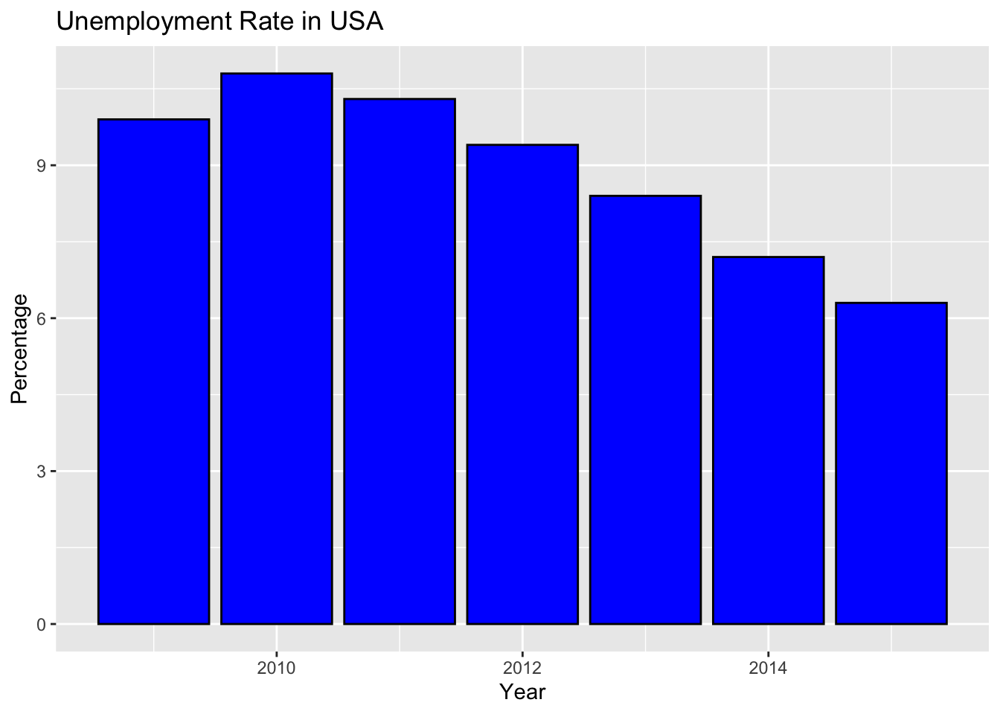
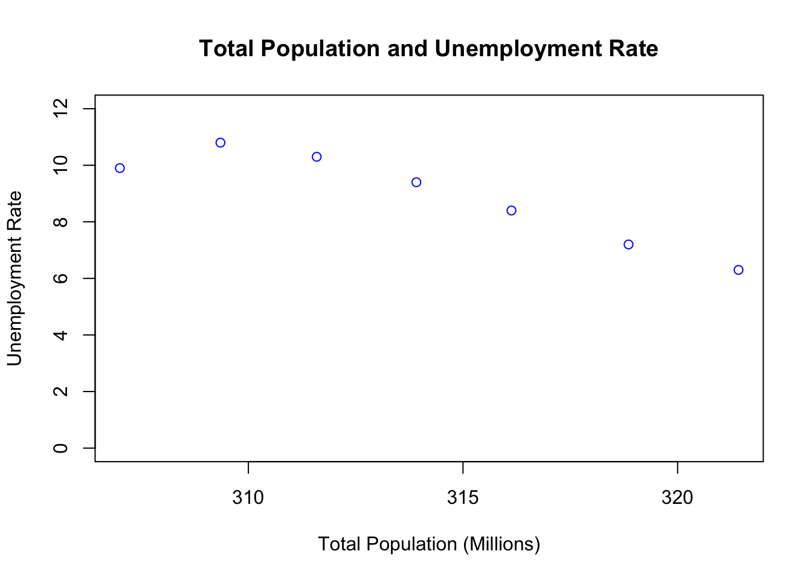
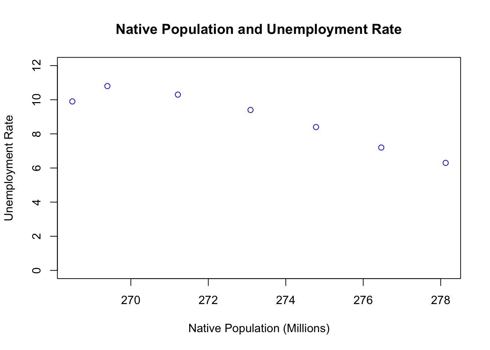
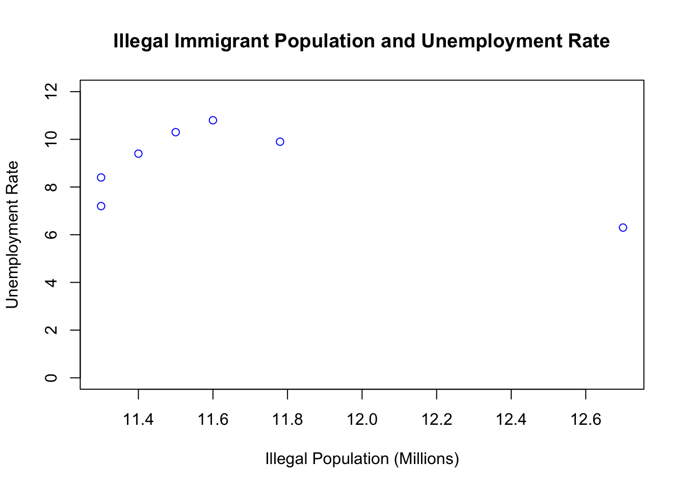
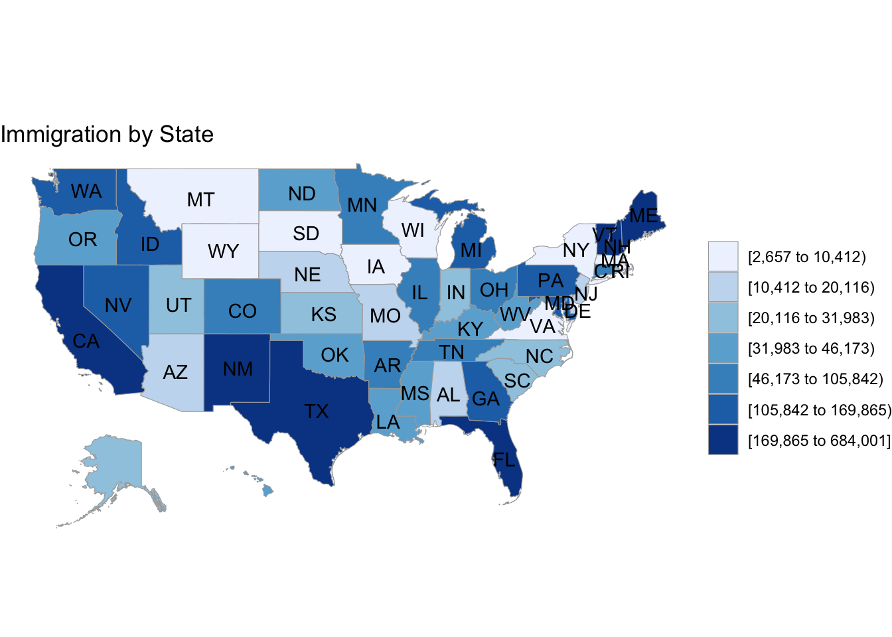

The purpose of this analysis was to examine potential relationships between the immigrant population size and the unemployment rate in the United States.
Below is a graph that indicates the total native and immigrant population sizes in the united states from 2009-2015. This data was obtained from publicly available census records. All data files and R code used in this analysis can be found on my GitHub site.
Population size has gone up since 2009, and this is true for native born citizens, foreign born citizens and foreign born non-citizens.
| Year | Total | Native | Naturalized | Foreign | Foreign Not Citizens | Illegal |
|---|---|---|---|---|---|---|
| 2015 | 321.42 | 278.13 | 20.70 | 43.29 | 22.59 | 12.70 |
| 2014 | 318.86 | 276.47 | 19.98 | 42.39 | 22.41 | 11.30 |
| 2013 | 316.13 | 274.78 | 19.29 | 41.35 | 22.05 | 11.30 |
| 2012 | 313.91 | 273.09 | 18.69 | 40.82 | 22.14 | 11.40 |
| 2011 | 311.59 | 271.21 | 18.14 | 40.38 | 22.24 | 11.50 |
| 2010 | 309.35 | 269.39 | 17.48 | 39.96 | 22.48 | 11.60 |
| 2009 | 307.01 | 268.49 | 16.85 | 38.52 | 21.67 | 11.78 |
Despite the increase in population size, the unemployment rate has gone down since 2009. This means that if there is a correlation between unemployment rate and immigration into the United States, that it would be a negative relationship. This means that as immigration has gone up, that unemployment has gone down.

Importantly, correlations do not imply causation….EVER! What does this mean? Just because numbers tend to go up and down together doesn’t mean that one variable is causing the other to do anything. More simply put, correlations could capture something that happens by coincidence. This is true no matter how strong a correlation is. Correlation analyses are good indicators of where to deeper, and should never be interpreted as causal on their own.
First I ran a simple correlation on overall population size and unemployment rate. This was statistically significant (r = -0.92, p = .002). Results showed a strong inverse relationship between the total US population size and unemployment rate (r = 0.92) and this is unlikely due to chance (p = 0.002).
What do the numbers in parentheses mean?

There was also a negative (inverse) correlation between the unemployment rate and the foreign born population (r = -0.88, p = .009), but this relationship did not occur when I looked specifically at the non citizen foreign born population (r = -0.41, p = .36).
Next, I did a correlation analysis on the native born and naturalized United States citizen population and unemployment rate. The results showed statistically significant relationships between in both cases (Native: r = -0.94, p = .002; Naturalized: r = -0.92, p = .003).

Finally, I looked for a relationship between Unemployment Rate and the Illegal immigrant population size and did not find a significant relationship (r = -0.46, p = 0.30). Census records do not ask for immigration status, this data was found here.

The United States is a big country, and I thought it might be worthwhile to illustrate where the most immigration is taking place. To examine this I looked at immigration numbers for each state and totaled them for the past five years.
Below is a map that indicates which states have had the heaviest influx of immigrants (both legal and illegal). Again, this data was obtained via publicly available census records on population change.

I decided to dig a little deeper, and see if there is a correlation between unemployment and 5 year immigration numbers by state. This gives us a much larger and more detailed data set than looking at the United States overall.
I found no relationship between 2016 state unemployment rates and immigration numbers (r = 0.178, p = 0.21) or between 2014 violent crime rates and immigration numbers (r = 0.226, p = 0.118). However, when I examined the relationship between state unemployment rate and crime, there was a statistically significant correlation (r = 0.526, p < 0.001)
Data should be used to both raise and answer questions. The analysis provided here answered some basic questions about recent immigration and unemployment rate in the United States, but raises many more.
I have vowed to keep my personal opinion off of this website, so I will refrain from sharing it with you here. Instead I will offer some discussion questions to get those neurons firing.
What are the limitations of this analysis? There are always, always, always limitations to any analysis. One example here: the data covered here only go back to 2009, the scope of this analysis is limited.
Unemployment rate overall seems to be going down as population size is going up, but we know correlation does not imply causation. What other factors could be at play?
If the population size of foreigner born non-citizens is not related to unemployment rate in the United States, how could this otherwise be impacting our country?